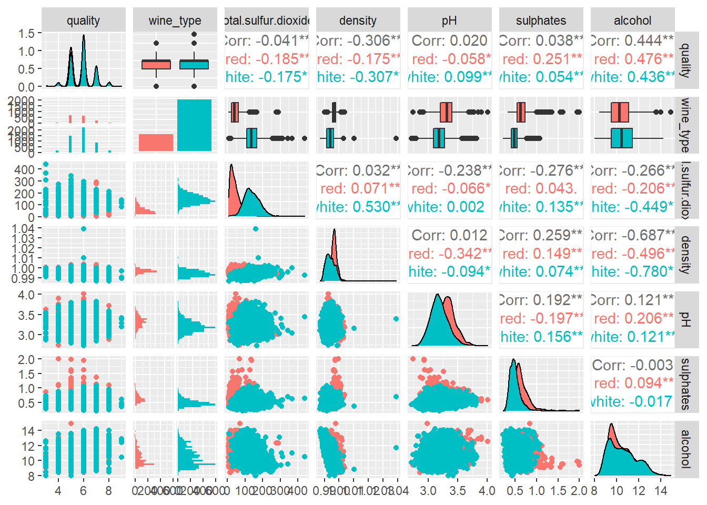

I’ve been reading about XGBoost and wanted to take it for a ride
Author
Jake Wittman
Published
August 26, 2022
For learning how to use XGBoost in R, I’ve settled on the wine quality data set.1 This data contains a number of physiochemical variables pertaining to the different types of wine as well as a quality score (between 0 and 10). I know very little about wine, and mostly just drink my wine from a box, but I thought it sounded like a fun dataset to use. Let’s explore the data a bit before we dive into working with XGBoost. I’ll start by combining the two datasets into a single wine dataset.
Opening the bottle
library(dplyr)
Attaching package: 'dplyr'
The following objects are masked from 'package:stats':
filter, lag
The following objects are masked from 'package:base':
intersect, setdiff, setequal, union
library(magrittr)
Warning: package 'magrittr' was built under R version 4.0.5
Let’s get some quick pairs plots up. Trying to plot all 13 variables on one plot is just too messy, and I don’t care too much about the pairs plots for our different phsyiochemical variables right now, so I split this plot into two so they’re a bit easier to see.
library(GGally)
Warning: package 'GGally' was built under R version 4.0.5
Registered S3 method overwritten by 'GGally':
method from
+.gg ggplot2
`stat_bin()` using `bins = 30`. Pick better value with `binwidth`.
`stat_bin()` using `bins = 30`. Pick better value with `binwidth`.
`stat_bin()` using `bins = 30`. Pick better value with `binwidth`.
`stat_bin()` using `bins = 30`. Pick better value with `binwidth`.
`stat_bin()` using `bins = 30`. Pick better value with `binwidth`.
`stat_bin()` using `bins = 30`. Pick better value with `binwidth`.
`stat_bin()` using `bins = 30`. Pick better value with `binwidth`.
`stat_bin()` using `bins = 30`. Pick better value with `binwidth`.
`stat_bin()` using `bins = 30`. Pick better value with `binwidth`.
`stat_bin()` using `bins = 30`. Pick better value with `binwidth`.
`stat_bin()` using `bins = 30`. Pick better value with `binwidth`.
`stat_bin()` using `bins = 30`. Pick better value with `binwidth`.
`stat_bin()` using `bins = 30`. Pick better value with `binwidth`.

Looking at these plots, it looks like we have some significant correlation between our physiochemical variables and either quality or wine type. I think we could probably expect physiochemical variables to vary between red and white wines. Sulphates, for example, tend to be higher in red wine than in white wines. Sulfur dioxide appears to be slightly highe in white than in red. As far as quality goes, more sulphates are correlated with higher quality red wines, but when considered overall in the wine have almost a very small (albeit significant) correlation with quality. This suggests that different variables will have different predictive power depending on if the wine is red vs white, so if we were to train models separately on each we would expect the models would not look the same. However, if predicting quality is the goal I think I want to include wine type. We will build models for predicting both quality and wine type.
What is XGBoost?
XGBoost is a gradient boosting algorithm (it stands for eXtreme Gradient Boosting) used in supervised learning, where we are interested in using multiple features \(x_i\) to predict our target \(y_i\). Like most machine learning methods, it requires picking a loss function to express how predictive our model is given the data and a way to regularize our model, or to ensure that we aren’t overparameterizing the model and fitting noise. In the simplest terms I can manage, what we are doing is fitting a really simple classification or regression tree, calculating the errors from that tree, then we build a model to predict those errors and add the most recent model to our base model to form an ensemble of models. Repeat ad nasuem (well, until we’ve optimized our loss/regularization function).
I’ll be using the tidymodels package in R for fitting and tuning this model. It’s another package I’ve been meaning to learn, and here’s a great opportunity. For this, I’m following along with Julia Silge’s post.
v broom 1.0.0 v rsample 1.1.0
v dials 1.0.0 v tibble 3.1.8
v infer 1.0.3 v tidyr 1.2.0
v modeldata 1.0.0 v tune 1.0.0
v parsnip 1.0.1 v workflows 1.0.0
v purrr 0.3.4 v workflowsets 1.0.0
v recipes 1.0.1 v yardstick 1.0.0
Warning: package 'purrr' was built under R version 4.0.5
Warning: package 'tidyr' was built under R version 4.0.5
-- Conflicts ----------------------------------------- tidymodels_conflicts() --
x purrr::discard() masks scales::discard()
x tidyr::extract() masks magrittr::extract()
x dplyr::filter() masks stats::filter()
x dplyr::lag() masks stats::lag()
x purrr::set_names() masks magrittr::set_names()
x recipes::step() masks stats::step()
* Search for functions across packages at https://www.tidymodels.org/find/
Now we can set up the model specification, including the hyperparameters we’re going to tune. I’ll just note that I’m doing a regression tree here, since quality is between 0 and 10. Later, we’ll try predicting wine type and do a classification.
A bit on each hyperparameter. The trees hyperparameter is pretty straightforward: it’s the number of trees in our ensemble. min_n is the minimum number of data points in a node in order for that node to be split. So, say min_n is set to 5. If a node ends up with 4 observations in it, it will not be split further. loss_reduction will determine how much of a loss we should be looking for when we split a node. This helps prevent overfitting and splitting nodes where the change in loss is negligible. mtry is the number of predictors to be randomly sampled when doing each split. This also helps prevent overtuning in decision trees. The learn_rate parameter determines how much the algorithm adapts from tree to tree. I’m not 100% sure what sample_size means - the help file for boost_tree() says its the number for the number (or proportion) of data that is exposed to the fitting routine. I’m guessing that means that only a certain amount of training data is given to the model each time?
Anyway, this is a lot of hyperparameters and we need to specify some numbers to try. Julia uses a latin hypercube, so we’ll go ahead and do the same.
I’ve not seen finalize before, but I guess it’s used to specify how many possible parameters can be sampled from for the mtry parameter.
Now we get to set up the workflow and the cross-validation samples for tuning. Because I want to use wine type as a predictor, I think I need to add an extra recipe step.
Now we get to run the model! Let’s set up the parallel backend to speed things up. I’m doing this with a 12-core (24-hypercores) processor, so hopefully it’ll be speedy. Setting it to use 10 cores so I can still use my computer in the meantime.
Learn rate seems to be inversely proportional to loss reduction in terms of the effect on the RMSE. The other parameters are a bit all over the place, suggesting multiple possible best parameter values for those. Let’s see what was actually the best
Now we get our final model and see which variables appear to be the most important, then we’ll go ahead and test the model on our test data. For some reason, wine_type isn’t showing up in the VI plot below. At first I thought it was because I needed to convert it to a dummy encoding (hence the recipe with step_dummy() previously). But that still doesn’t solve the issue. If anyone knows why, tweet at me! (I haven’t figured out how to turn on comments yet, or if I want to).
Interesting that alcohol seems far and away the most important predictor of quality. Looking back at our EDA plots, it doesn’t jump out at me as particularly predictive, but then again nothing really did. Maybe the raters just enjoyed getting drunk faster. I’m not sure what volatile acidity means (remember, I don’t know anything about wine although I’m definitely going to drink some after I finish this).
# A tibble: 2 x 4
.metric .estimator .estimate .config
<chr> <chr> <dbl> <chr>
1 rmse standard 0.601 Preprocessor1_Model1
2 rsq standard 0.512 Preprocessor1_Model1
An RMSE of 0.625 seems pretty good, but lets make a plot of our predictions. On this plot, I’ve overlaid the grey dotted line which is what the model should be predicting if it were correct all the time.
Seems pretty clear that our model thinks bad wines are better than they actually are and great wines are worse than they actually were rated. Our model needs to drink more bad/great wines! We can tell from the plot that there are definitely fewer wines present at the ends of the spectrum, but lets take a look to see.
Makes sense that the model may not perform as well out in the regions where it doesn’t have as much information. I know I said I was going to predict wine type next, but I’m tired. I’ll save that for another post!
Footnotes
P. Cortez, A. Cerdeira, F. Almeida, T. Matos and J. Reis. Modeling wine preferences by data mining from physicochemical properties. In Decision Support Systems, Elsevier, 47(4):547-553. ISSN: 0167-9236.↩︎